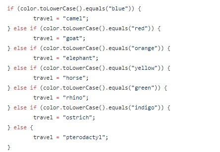
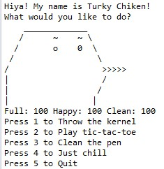
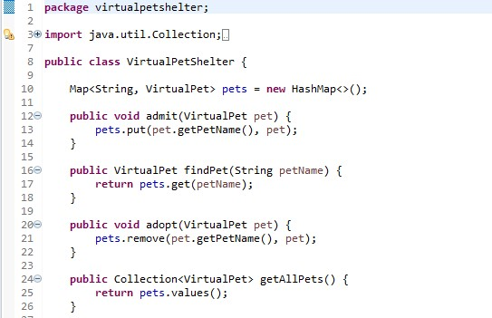
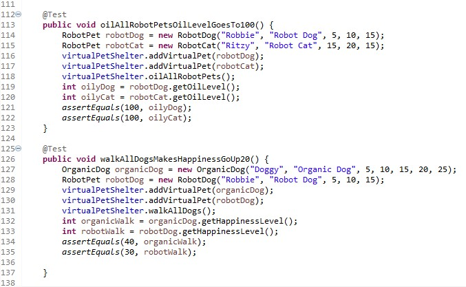
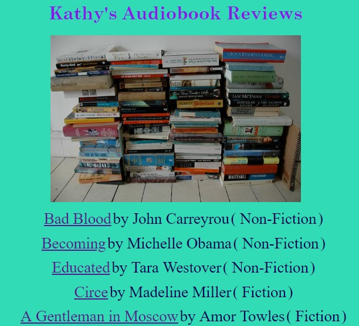

ABOUT ME
I was born and raised in Columbus, Ohio. I got my Bachelor's Degree from
Kenyon College and my Master's Degree in Teaching and Learning with a focus in Mathematics
from The Ohio State University. I am a Teach for America alumna and currently teach high
school mathematics at The Wellington School in Columbus, Ohio. I enjoy playing and coaching
chess and am a senior level tournament director. I also am a co-founder and the Director of Operations
of the Columbus Chess Academy, a non-profit aimed to create opportunities for students to engage in the game
of chess.
As a teacher and someone who hosts a variety of events through chess, I have learned various
management skills, including classroom management, conflict management, and managing a team. I
can also delegate tasks, communicate to different stakeholders, negotiate, and problem-solve. I
am proficient in the Microsoft Office Suite as well as Google Drive and can create websites through
WordPress. I am currently enrolled in WeCanCodeIt, a full-stack programming bootcamp. We have done
projects in Java, HTML, CSS, and have learned how to upload and download projects using GitHub. We
have also created projects using Spring Boot.
FORTUNE TELLER

In Fortune Teller, your fortune will be told based on your
responses to questions like your favorite color, how old you are, and how many
siblings you have. In this project, we learned about while loops, switches,
conditional statements, and how to use variables to print out the fortune line.
VIRTUAL PET

Virtual Pet is an app where you can perform a variety of actions on your pet (e.g, feed, play with, etc.)
and by doing so, you will change its various states (e.g., full, happy, etc.). We learned about
Object Oriented Programming, access variables, methods, constructors, and the tick method (how to
make states change after every interaction with the pet).
VIRTUAL PET SHELTER

Virtual Pet Shelter is an extension on Virtual Pet in that now you have a
variety pets you must keep track of and perform certain actions on. You also can
adopt a pet (remove it from the shelter) or add a pet to the shelter. In this project,
we were introduced to test-driven-development (TDD), maps, hashmaps, collections, and for loops.
VIRTUAL PETS AMOK

This project has been my favorite one so far. In this project, we took what we learned in Virtual Pet and Virtual Pet Shelter and added
robotic pets to the mix. This time, however, various actions were reserved to
specific types of pets. For example, you can only feed organic pets, not robotic pets. Similarly, you
can only walk dogs (both robotic and organic), but not cats.
We learned about interfaces and superclasses, and honed in our experience with TDD, maps,
and access variables. We also had to make sure each of our classes interacted correctly with each other.
REVIEWS

For this project, we picked a topic to review and created
a local webpage. My topic was books, and I wrote a brief review and gave each book a rating
and a picture. We were introduced to Spring Boot, created an MVC application, and used
Java, HTML, and CSS to create our webpage. We learned how HTML worked and how to link what
we did in Java to our HTML page.